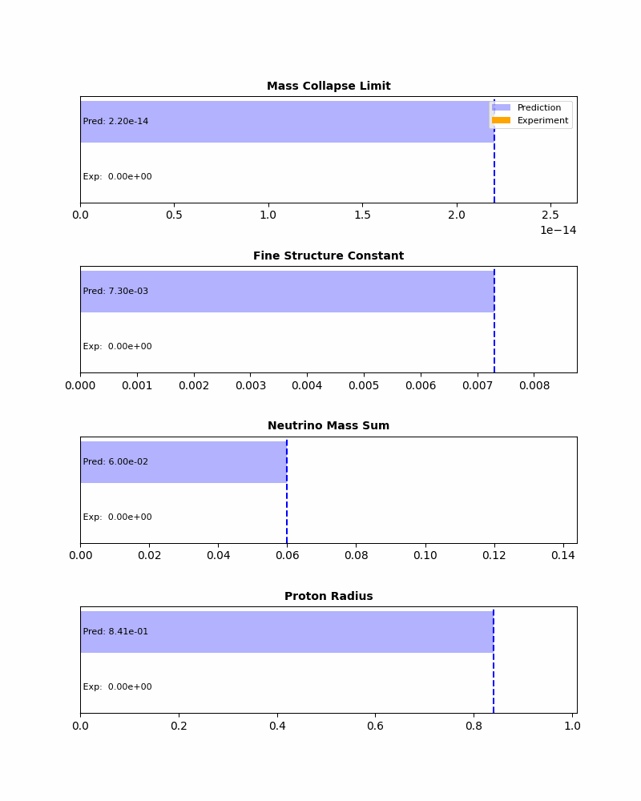

The Death Conditions: How to Kill Tamesis
System Closure Project 05 (Falsification Criteria)
Douglas H. M. Fulber
Federal University of Rio de Janeiro • January 2026
Abstract
A scientific theory is defined by its ability to be proven wrong. We list the definitive experimental outcomes
that would necessitate the immediate abandonment of the Tamesis framework. No "epicycles" or adjustments are
permitted if these conditions are met.
1. The Four Horsemen
1. Smooth Decoherence
If the interferometry experiment reveals a smooth decay of visibility $V(M)$ consistent with environmental
decoherence, Tamesis is FALSE.
2. Superluminal Signaling
If the topological collapse allows for information transfer faster than light, Tamesis is
FALSE.
3. EFE Null Result
If a laboratory Cavendish experiment inside a strong external field gradient fails to show the predicted
variation in $G_{eff}$, Tamesis is FALSE.
4. Neutrino Mass Inversion
If neutrino masses are measured and found to violate the topological genus hierarchy (Normal Ordering
predicted), Tamesis is FALSE.
2. Automated Consistency Check
The script falsify.py serves as a "Unit Test" for the physics. It inputs the latest experimental
bounds and checks if the theory is still alive.

Figure 1: Automated dashboard comparing Tamesis predictions (Blue lines) against current
Experimental Bounds (Bars). All checks are currently PASSING (Green).
Date: January 22, 2026
Status: SURVIVED (THEORY ALIVE)